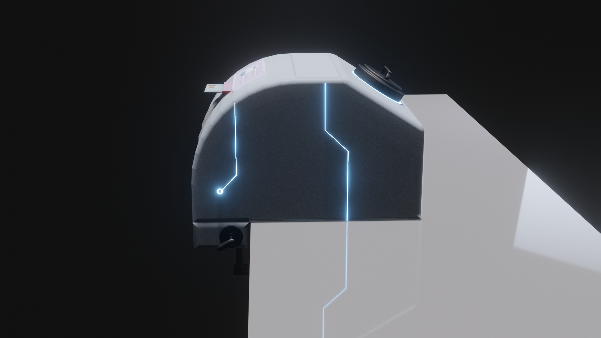
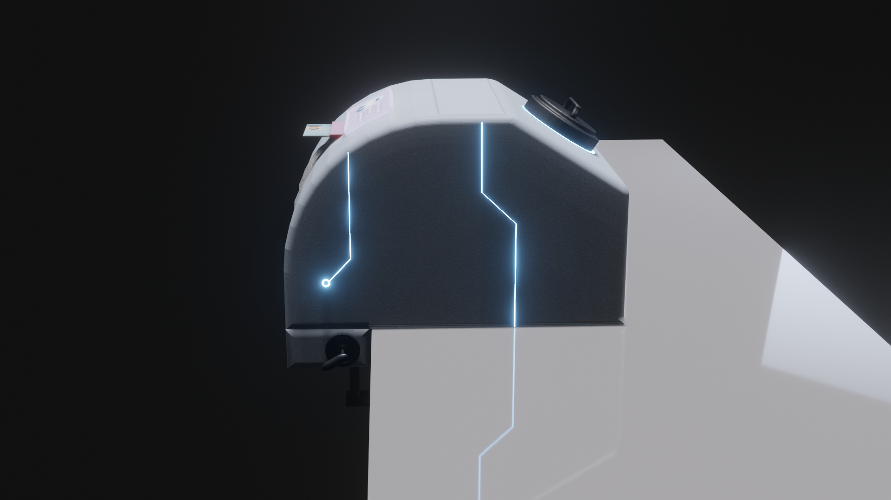

First Automatic Vaccine Injection Machine Draft
ต้นแบบของเครื่องได้แนวคิดมาจาก เครื่องวัดความดันในกระเเสเลือด โดยได้นำมาประยุกต์ให้เข้ากับปัญหาของการฉีดวัคซีน เช่น ปัญหาทางด้านบุคลากรที่ต้องใช้จำนวนที่เยอะในการฉีดวัคซีน 1 ครั้ง ปัญหาความล่าช้าในการฉีด เนื่องจากบุคลากรทางการเเพทย์ที่มีอยู่จำกัด ทำให้ไม่สามารถฉีดวัคซีนได้เยอะ เเละปัญหาการจัดเก็บข้อมูลของผู้ที่เข้ารับการฉีดวัคซีน โดยเครื่องจะใช้พลังงานไฟฟ้าเป็นหลักทำให้ง่ายต่อการติดตั้งและขนย้าย


 
